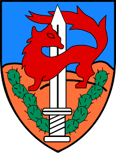

Content
- Givaty is a infantry just like marines how specialize in face to face combat.
- Just like Givaty israel has other infantries like Golani,Nahal and Tzanhanim.
- The difference between each infantry is that each one specialize a different landmark in Israel.
- Givaty color(nevertheless the IDF green one) Is Purple,Givaty March is "Mi Shechalam Givaty", And their Mascot is a Fox.
- Givaty has many Battalions such as :
"Tzabar","Shaked","Rotem","Tomer" And "The Gadsar"(which is their special forces)
- Givaty is part of the 162nd Armor Division of Israeli Southern Command.
- Givaty had participated in many operation and wars of the IDF and was titeled with many decorations
